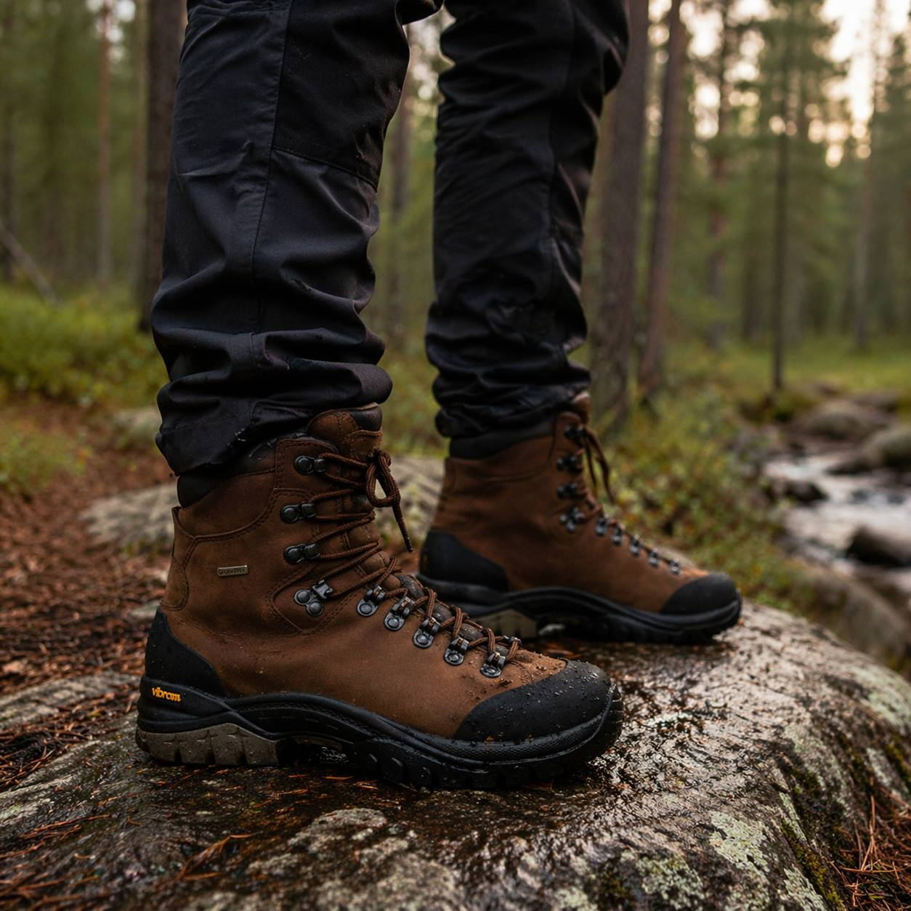
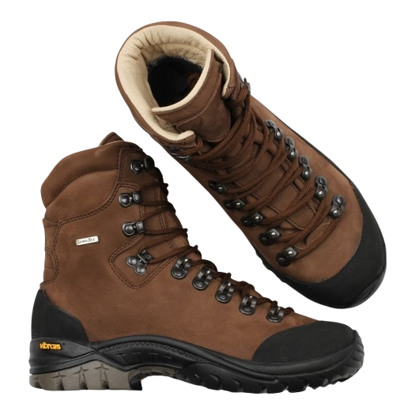
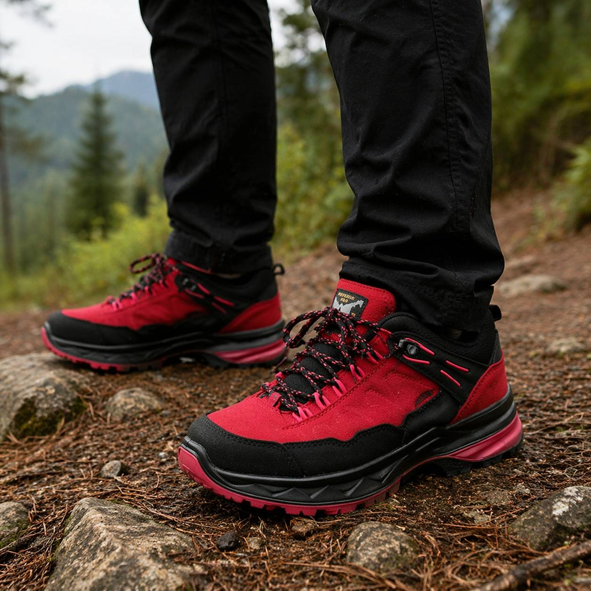
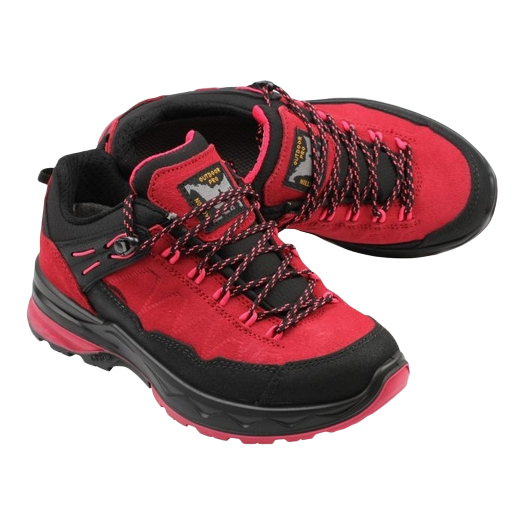
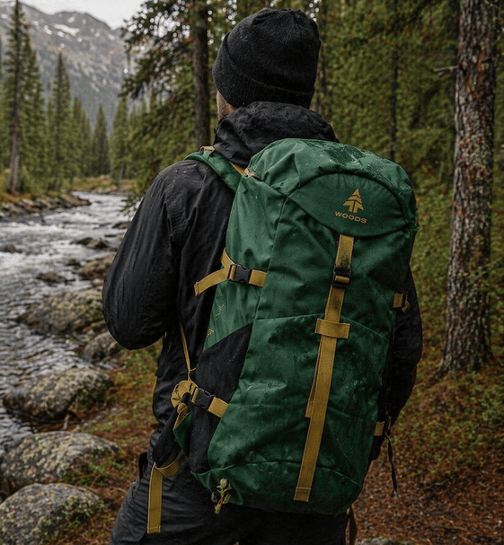
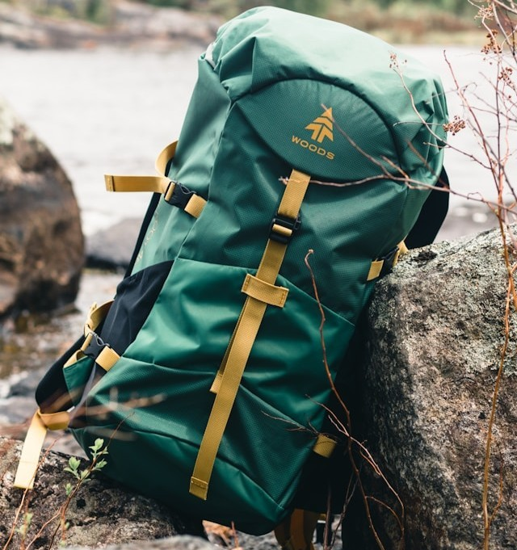
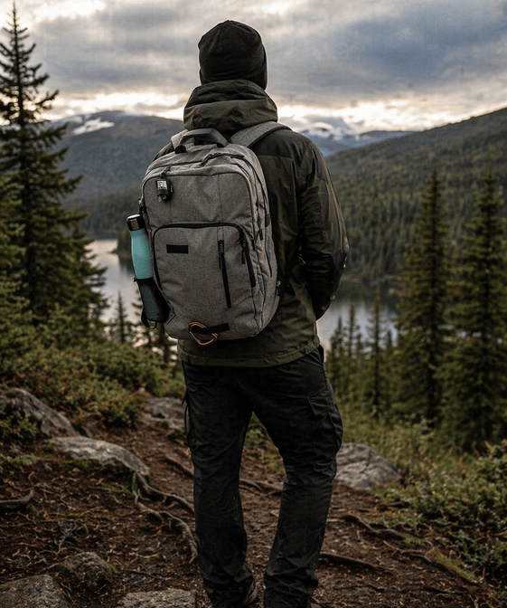
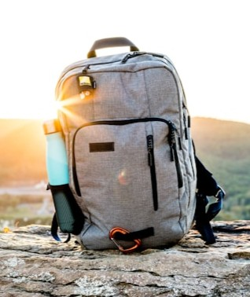

Den här robusta läderkängan är utvecklad för krävande fjällmiljöer och långa vandringar i varierad och utmanande terräng. Det slitstarka lädret ger ett mycket bra skydd mot väder, vind och slitage, samtidigt som materialet formar sig efter foten ju mer du använder kängan. Den höga konstruktionen ger stabilt stöd för ankeln, vilket är särskilt viktigt vid vandring med tung packning eller i stenig terräng. Sulan är designad för att ge bra grepp på både torra och våta underlag, vilket gör kängan till ett pålitligt val för seriösa äventyr i fjällen året runt.
Vandringskängor


Denna medelhöga vandringskänga är ett utmärkt val för dig som söker en balans mellan rörlighet, stabilitet och värme. Konstruktionen ger bra stöd för ankeln utan att kännas för tung eller begränsande, vilket gör den idealisk för både kortare och längre turer. Den integrerade isoleringen hjälper till att hålla fötterna varma under kyligare förhållanden, exempelvis under höst- och vintervandringar. Kängan har även en slitstark yttersula med bra grepp, vilket ger trygghet på hala eller ojämna underlag. Med fokus på komfort och funktion är detta ett pålitligt alternativ för vandring i kallare klimat.
Vandringsskor


Den här vattentäta vandringsskon är perfekt för dig som prioriterar lätt vikt och flexibilitet under dina turer. Skon är utrustad med ett vattentätt membran som effektivt håller fötterna torra i regn, blöta stigar och lerig terräng, samtidigt som den släpper ut fukt för att bibehålla en behaglig temperatur inuti skon. Den låga profilen ger en naturlig rörelsefrihet och gör den särskilt lämplig för dagsvandringar, snabba turer eller resor där packningen ska hållas lätt. Den greppvänliga sulan ger stabilitet på olika typer av underlag, vilket gör skon till ett mångsidigt val för aktiva utomhusupplevelser.
RYGGSÄCKAR
Vandringsryggsäck 60L - Woods


Denna rymliga vandringsryggsäck från Woods är framtagen för längre turer och flerdagarsvandringar där du behöver få med dig all nödvändig utrustning. Med en kapacitet på cirka 60 liter finns det gott om plats för kläder, mat, sovutrustning och andra tillbehör. Ryggsäcken är utrustad med ett justerbart bärsystem som ger god komfort även vid tyngre packning, samt vadderade axelremmar och höftbälte som avlastar ryggen. Flera praktiska fack och fästpunkter gör det enkelt att organisera din packning och hålla ordning under hela turen. Det slitstarka materialet är anpassat för nordiska förhållanden och klarar både väder och tuff terräng.
Dagsryggräck 30L - Nikon


Denna smidiga och mångsidiga ryggsäck från Nikon passar perfekt för dagsutflykter, kortare vandringar eller som en praktisk vardagsryggsäck. Med en kapacitet på cirka 30 liter rymmer den det viktigaste du behöver för en dag ute i naturen, såsom extra kläder, mat och mindre utrustning. Den kompakta designen gör den lätt att bära, samtidigt som den erbjuder bra komfort tack vare vadderade axelremmar och ryggpanel. Ryggsäcken har flera smarta fack som gör det enkelt att organisera innehållet, och det slitstarka materialet gör den till ett pålitligt val för både friluftsliv och stadsmiljö.